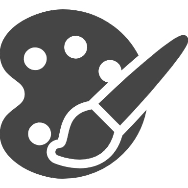
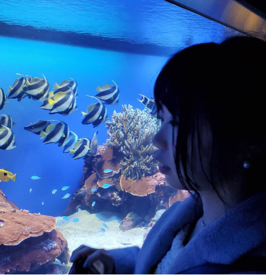

デザイン
バナーデザイン、LPデザイン、
フライヤーデザイン、名刺作成が可能です。
【使用ツール】
Photoshop / Illustrator / Canva / Figma
- 私について -
京都府出身、滋賀県在住。
大学では舞台芸術を学んでいました。
卒業後は上京し、舞台活動を経験。
その後、地元関西に戻り就職。
ケータイショップ販売員、
CADオペレーター（設計アシスタント）の業務を経験しました。
2023年、妊娠を機に退職。
妊娠中にキャリアスクールSHElikesに入会。
WEBデザインを始めWEBスキルを学び、習得。
現在は出産を経て、育児の傍ら学びを深めつつ
Webデザイナーとして活動を始めました。

- できること -

バナーデザイン、LPデザイン、
フライヤーデザイン、名刺作成が可能です。
【使用ツール】
Photoshop / Illustrator / Canva / Figma
html,cssの基礎知識を習得しています。
簡易なwebサイトのコーディング、
WordPress構築が可能です。
【使用ツール】
WordPress / HTML / CSS
- 経歴 -
窓口でのお客様対応、プランの提案、各種手続き、各種サービスの営業販売を担当。
半導体製造装置の製造工場での図面作成業務（電気回路図、機械設計図面作成）。
AutoCAD / Excel / Word / Outlookなど、PC基本スキル。
Skype、Teamsなどのオンライン連絡ツールを使ったクライアントワーク。
妊娠を機に退職し専業主婦になる。妊娠中にキャリアスクールSHElikesにてwebデザイン学習を開始。
出産を経て育児と並行して学習を進めつつ、フリーランスのWebデザイナーとして活動を始める。
現在は在宅にて画像加工・サムネイル画像作成などの業務をメインにお仕事させていただいております。